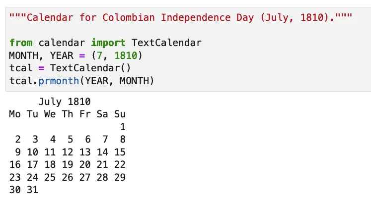
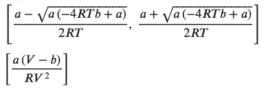
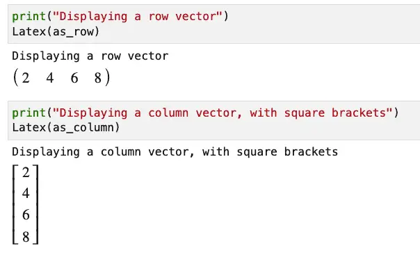
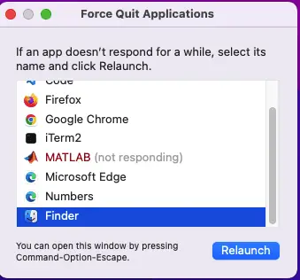
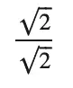
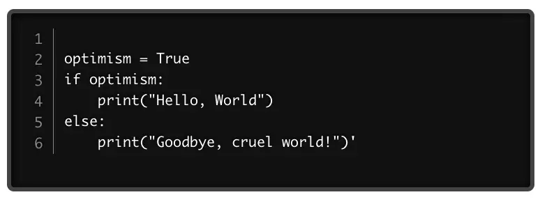

Table of Contents
Introduction
Outline and Introducing the Companion Repository
Basic Python Debugging in VS Code
Debugging a Simple Python File
Visual Studio Code: Understanding the Left-Hand Debugging Panel
VS Code: Bottom Debugging Related Panels
Visual Studio Code Debug Configuration Files
Closing Thoughts
Introduction¶
Using VS Code as a Python IDE has many advantages. It is faster than PyCharm, and it is also a great general editor. That means you can use the same editor and keyboard shortcuts for Python as you use to edit your Bash scripts, JavaScript, and whatever else you may need to do. Unlike PyCharm, you don’t need to pay extra for a “Profession Version” to add support for things like debugging frameworks like Django or working in Docker containers. You also don’t need additional products if you find yourself going off and learning something like C or C++: install the appropriate plugin into VS Code, and you’re good to go.
However, as I argued in my comparison of PyCharm vs. VS Code, setting up debug configurations is easier in PyCharm. This article aims to level the playing field by exploring how to get started with VS Code debugging for Python.
Outline and Introducing the Companion Repository¶
We’ll begin with basic information about general debugging and what you can learn about your code in the debugger. All of this will be in the context of a hands-on coding and debugging exercise in VS Code. For this portion, we’ll use some of VS Code’s built-in support for easily debugging a Python file.
Later, we will cover some introductory information about VS Code Configuration files. We won’t go into every possible configuration, but we will give you a taste of what’s available.
This article has a companion GitHub repository that contains the source for this article. In a separate effort, we may include several full “mini-projects” that will also use this repository. If you have a GitHub account, we highly recommend forking the repository before cloning it, since some of this work will include sections on remote debugging. For those, you’ll want to have your own copy remotely as well.
Doing that will also let you clone your forked repository locally so you can commit and push any changes you might like to make.
Note: If you don’t have a GitHub account, you can still work along with most of this article if you have Python and Visual Studio Code installed. If that’s the case for you, you can download the code as a zip file.
Basic Python Debugging in VS Code¶
Let’s see how we can begin debugging code locally in Visual Studio Code using the repository we got in the last section. In addition to having Visual Studio Code installed, you’ll also need Microsoft’s Python extension installed. Find the extension icon on the left side of VS Code:
Clicking this brings up the extension marketplace, and you can use the search bar to get the Python extension:

Click install if you see the Install button as above, otherwise, you can skip this step (since you already have it).
With this done, we’re ready to open our project file. From the VS Code menu, select File / Open Workspace from File, and open the workspace in the root of the repository named “debugging-python-vs-code.code-workspace”. Visual Studio Code will probably show you an error to the effect that you haven’t selected a Python interpreter.

Dismiss this window for now, because we’ll set up the Python interpreter in the next step.
Whether you’re on Mac or Windows, open a VS Code terminal, and type:
# create a virtual environment in the .venv directory:
python3 -m venv .venv
At this point VS Code might prompt you again to set the Python interpreter to the newly created virtual environment. If it doesn’t, open the Visual Studio Code command palette (CMD-Shift-P on the Mac; CTRL-Shift-P on Windows) and search for “Python: Select Interpreter.” Choose the option that’s showing for the virtual environment you just created:

Once this is done we can finish activating our virtual environment and installing our product requirements:
# Make the virtual environment active (Linux / Mac)
source .venv/bin/activate
# OR
# Make the virtual environment active (Windows)
.venv\Scripts\activate.bat
pip install -r requirements.txt
Debugging a Simple Python File¶
With that, we’re ready to begin our first debug session. Let’s go over to the directory and open up the file perfect_math.py. Perfect math? Wow, somebody has a high self-opinion. Opening the file, we see who wrote it. It’s our old nemesis Brad Bumblekey!
"""
This code is perfect. I, Brad Bumblekey, a senior architect,
have tested it and certified it bug-free.
Copyright (c) 2022
Bradley Bumblekey and Robustness Unlimited(tm)
"""
def is_number(value):
"""determine if a value is a number."""
return isinstance(value, int)
def get_numbers_from_dictionary(dct):
"""Gets the numbers from dictionary, dct, as a tuple containing all the numbers"""
numbers = []
for key in dct.keys():
value = dct[key]
if is_number(value):
numbers.append(value)
return numbers
def test_get_numbers_from_dictionary():
print("Instructions: examine the printout. Ensure only numbers are included")
bond = {"agent": "James Bond", "agent_number": 7, "age": 37}
numbers = get_numbers_from_dictionary(bond)
print(numbers)
if __name__ == "__main__":
test_get_numbers_from_dictionary()
We don’t really understand why the business wants to be able to get the numbers out of a dictionary and return a tuple with just numbers and no labels. However, they’ve told us they’re happy with the design (probably because they paid a lot of money for Brad), but they’ve submitted a bug report with the cryptic message: “This function doesn’t do what we expect.”
We can see lots of problems with this file right from the beginning, but let’s actually run it through the debugger so we can get a better handle on everything.
Fortunately, we don’t need to really configure anything to debug Python in a simple file like this. We can just press F5 or click the dropdown next to the run button in the upper right-hand corner of Visual Studio Code:

After you do that once, the button will change to look like a run button with a bug next to it. Next time you can click the button to run your code in the debugger and see the results:
Before using the debugger features, we noticed that – in typical Brad Bumblekey fashion – the test function requires us to examine the output (unlike a real unit test) and only includes tests that pass. So let’s at least fix the second problem. First, add the following import to the top of the file under the comment:
from decimal import Decimal
Next, let’s add more cases to the “bond” dictionary in test_get_numbers_from_dictionary:
bond = {"agent": "James Bond", "agent_number": 7, "age": 37,
"girlfriends_per_episode": 2.3,
"shaken_not_stirred": True, "ppk_caliber": Decimal(.380)}
Pressing F5 to rerun our Python file, we now see this output:
Alright! Now we see what the business is talking about. True gets added as a number, which it shouldn’t. We understand that that makes sense given Python’s roots in C, but for our
On the other hand, the test dictionary included a floating point number and a Decimal. Both of these were not added and should have been.
Let’s start by setting a breakpoint on the first non-comment line of get_numbers_from_dictionary, which looks like this:
numbers = []
We know we want to start in this function since it’s the one misbehaving. To set the breakpoint, we can either scroll to that function and press F9 to toggle the breakpoint to “ON”, or scroll off to the left of the function name until a faint red dot appears, then click it to make it more visible. Here’s how it looks when toggled “ON”:

Now, when we press F5 to begin debugging, this doesn’t just run our code, it stops at the function where the breakpoint is. It also and brings up a debug toolbar.
Hovering over any button on the debug toolbar with alt pressed will display the meaning of the button and the shortcut keys associated with it. As an overview, here’s what they mean and their keyboard shortcuts

Continue (F5): used to begin a debugging session, or if on a breakpoint, advances until the next breakpoint or until the program ends (or waits).

Step Over (F10): steps through each line of code without going into any functions we might call.

Step Into (F11): If on a function definition (as we are now), or on a line that calls a function, this moves into the function so we can “step through it” (for example, using Step Over for each line).
Step Out (Shift-F11): This is the opposite of F11, in other words, it takes us back to the caller of our current function.

Restart (Shift-Command-F5): This restarts our current debugging session.

Stop (Shift-F5): This will end our debugging session.
Note that some of these keyboard shortcuts may conflict with operating system defaults, so if you run into problems, just click the buttons on the debug navigation bar.
If we press F10 several times to “Step through” our function, we’ll notice that it will actually loop through the for loop, “for key in dct.keys()”. We’ll also see that it’s the is_number function that’s actually controlling whether or not a number gets added to the list. So, with the cursor on is_number as shown here:

Press the “Step Into” button to go into the is_number function. That will bring us to the first non-comment line of the function.

At this point, we’ve located the bug, which is that we’re checking our value only against “int”. That’s too specific, which is why we’re not including floats and decimals. At the same time, we’re letting values of the type bool get through.
Let’s use VS Code to quickly test out a candidate fix. The Python numbers module contains a base class, Number, that should be general enough to test numbers again. Let’s add an import to the top of the file:
from numbers import Number
Next, let’s change is_number to this code:
def is_number(value):
"""determine if a value is a number."""
return isinstance(value, Number) and not isinstance(value, bool)
If we run the code again and let it run to the end, we can see that the boolean values are excluded, but the floating point and Decimal values are not. (To be sure, the Decimals display more precision than we need, but that’s not an issue for us – we just want to make sure they’re included).
There’s a lot more to debugging than what we’ve covered here, but once you know how to set breakpoints and step through code, you can explore these other features on your own. To give you a taste of what’s available, if you set a breakpoint on the code in “is_number” and run to that point, you’ll see several windows on your left.
Visual Studio Code: Understanding the Left-Hand Debugging Panel¶

Variables: The variables window lets you evaluate and even temporarily change the value of a variable while the program is running. This is great for temporarily running “what if scenarios”.
Watch: The watch window lets you narrow your focus to specific variables. You can also enter expressions here to watch a specific attribute of a class or range of elements in a list, for example.
Call Stack: The call stack is an awesome navigation tool. It shows where you are, and lets you click back and forth between called functions and the callers of them. As you do this, you’ll see the code displayed at that level. Knowing how a function is used can also point the way to how you might better check function inputs.
Breakpoints: This window shows what breakpoints you have set in your Python code, as well as the default “Uncaught Exceptions” breakpoint. By the way, we’ve been focusing on static breakpoints in this article, but you can also use a conditional breakpoint to stop when a certain condition is met. This can be great, for example, if you want to know where a variable changes its value in a long string of code. As with so many Visual Studio Code features, CMD-Shift-P into the command palette and typing “conditional” will help you get started with this feature.
VS Code: Bottom Debugging Related Panels¶
As shown above, while you debug Python in Visual Studio Code, pretty much all of the panels to the left will be related to your debug session. The bottom panel is a bit more of a mixed bag, but let’s briefly go through it.
Directly below our Python file, we’ll see several tabs representing the panels that are available.

The exact headers will vary quite a bit depending on what extensions you have installed. For our purposes, we want to focus on the three relevant ones. They are “output”, “terminal”, and “debug console”.
Beginning with the output panel, one issue that’s obvious right away is that the output is not neatly formatted in the output window, which is blank. However, if we look at the terminal window we see output that looks like this:
cd /Users/johnlockwood/source
/CodeSolid/debugging-python-vs-code ; /usr/bin/env /Users/johnlockwood/source/CodeSolid/debug
ging-python-vs-code/.venv/bin/python /Users/johnlockwood/.vscode/extensions/ms-python.python-
2022.10.1/pythonFiles/lib/python/debugpy/adapter/../../debugpy/launcher 52437 -- /Users/johnl
ockwood/source/CodeSolid/debugging-python-vs-code/01-basic-python-debugging/perfect_math.py
Instructions: examine the printout. Ensure only numbers are included.
Notice that only the last line came from our print statement. The rest might be helpful if we want to peak into how VS Code runs the debugger, but really for our purposes, that’s just noise. We’ll discuss a way to clean that up in the section on configuration files.
Although the terminal window for the Python debug console will be effectively frozen since we’re stopped on a breakpoint, we can always open or switch to another one using the list and “Add” control to the right of the terminal panel.
The benefit of getting your terminal from VS Code is that this terminal is “aware” of your selected Python enviromment. Therefore, if you launch Python to try out snippets of code, for example, you won’t have to separately activate your environment.
Another place where you can try out code snippets is the debug console, which lets you evaluate expressions and run code that will be live in the context of the current debugging session. It’s a bit less convenient for longer code snippets since, unlike the Python terminal, you’ll need to use “Shift-Enter” if you need a newline here. More commonly, however, this window is useful to try out one-line snippets of code, and examine variables, so it overlaps with the functionality of the variables and watch windows.
Visual Studio Code Debug Configuration Files¶
In the last section, we pointed out that the output in the terminal was not very clean. To fix that issue, we need to create a Visual Studio Code configuration and modify it somewhat. We didn’t get that option when we ran our code from the “play” button in the upper right of the screen, but to fix it, all we have to do is look for the equivalent button to the left. Here we show the button selected and the UI that we get as a result:

What we want to do here is click the link that says create a launch.json file. This will bring up a second window, with the option to select a debug configuration.

{
// Use IntelliSense to learn about possible attributes.
// Hover to view descriptions of existing attributes.
// For more information, visit: https://go.microsoft.com/fwlink/?linkid=830387
"version": "0.2.0",
"configurations": [
{
"name": "Python: Current File",
"type": "python",
"request": "launch",
"program": "${file}",
"console": "integratedTerminal",
"justMyCode": true,
}
]
}
I haven’t been able to find a solution that lets us see the output of our program in the “output” window, but what we can do instead is send it to the debug console window. To do that, we remove the line below:
"console": "integratedTerminal",
We replace that line with the following two lines:
"console": "internalConsole",
"internalConsoleOptions": "openOnSessionStart",
Now, if we debug our program, we’ll see the program’s output in the debug console window, which will open automatically for us. Unlike the terminal window, we get two benefits out of this:
We won’t see extra information like the debugger startup code, which is excellent. The output is now just what our print statements show.
We can interact with the debug console just as we did before, using it, for example, to examine local variables. The program output and our interactions with the debug console will have different colors:

However, one important caveat about launch.json is that it won’t work if you use the play button in the top right-hand corner of the editor or from the command palette. It will work if you use the debug button we used when we originally created the launch.json. Clicking this, we’ll see a new play button appear that references the configuration we created. Alternatively, we can simply press “F5”, which will also work fine.
Closing Thoughts¶
That was something of a whirlwind introduction to debugging Python with VS Code. Along the way, we discovered a few inconsistencies and issues that belong on the island of misfit toys: an output window that doesn’t output, and a debug button in the upper right that behaves differently from the one on the left-hand toolbar. Along the way, however, we also discovered that the debug configurations for which Jetbrains charges a subscription in Python – Flask, Django, etc. – are ours for free in VS Code.
There’s more to write and explore about VS Code debugging configurations, but to whet your appetite in the meantime, I’ll show you what’s available if you create a vanilla configuration based on the various “Select a debug configuration” choices. I’ll add those files to the directory 02-config-files in the repository for this article, along with a README to explain what they are.